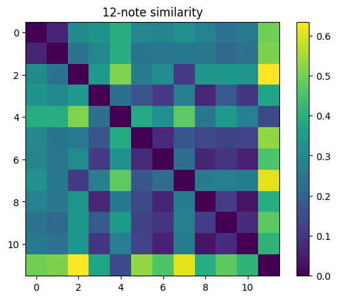
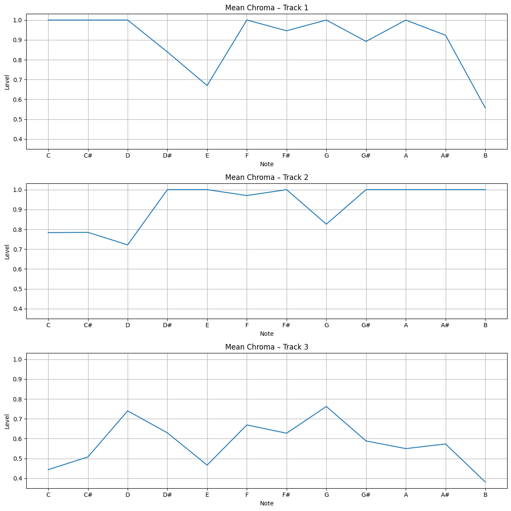
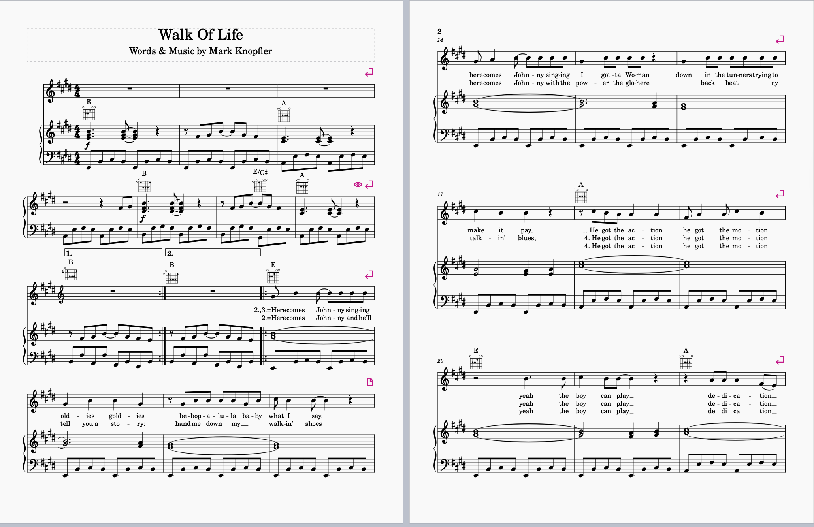
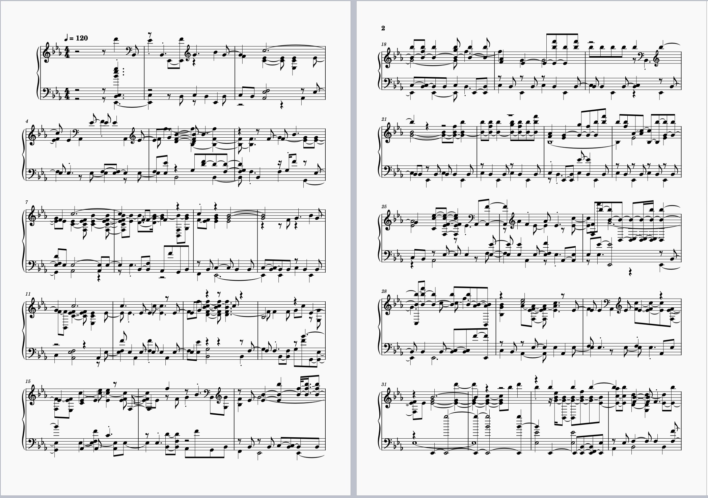

Week 10 Audio Similarity
Task 1: Similarity
For this task, I extracted Chroma features in Sonic Visualiser for each of the three tracks from Week 8 and used them to generate visual similarity comparisons.
Chroma Features
The image below shows the chroma output for all three tracks.
Track 1: Sultans of Swing
Track 2: Walk of Life
Track 3: Money for Nothing

Difference Between the Tracks
This comparison highlights where pitch-class activity differs across the three songs.

12-Note Similarity
This matrix represents the similarity of the 12 pitch classes across the three tracks.
Mean Chroma Features for All 3 Tracks
The following graph shows the mean chroma distribution for each track, summarising their pitch content tendencies.
Task 2: Transcription
For this task, I opened my Week 2 piece in MuseScore and exported it as both a WAV file and an image. I then opened the WAV file in Sonic Visualiser and generated a Polyphonic Transcription. The outputs below show the original score alongside the automated transcription created by Sonic Visualiser.
Original Score (PNG)
Original WAV File
Transcribed WAV File
Screenshot of Auto-Transcribed Score
Comparison Reflection
When I opened the transcribed piece in MuseScore, I immediately noticed that it looked very different from the original. Notes were missing or changed, and the rhythms didn’t match what I saw in the real score. On top of that, everything looked visually messy – you could clearly see symbols and notes overlapping, which made the transcription confusing to read. The title, composer, and dynamics were also missing.
I also noticed that the audio of the transcription played for longer than the original, which made it feel slightly off. Overall, the automated transcription was not very accurate, even though the audio still sounded somewhat similar to the original piece.